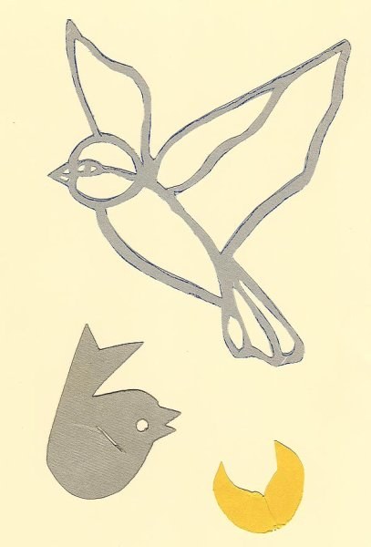
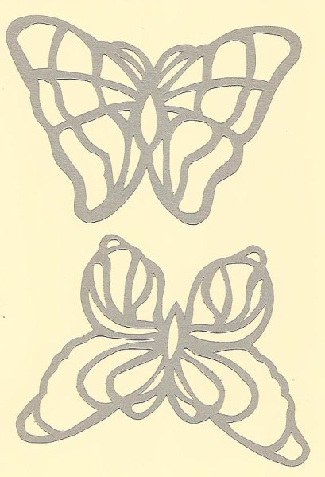

Anleitungen für Scherenschnitte Vögel und Schmetterlinge
Der kleine Vogel wird aus Tonpapier ausgeschnitten. Das Auge kann einfach mit einem Locher gestanzt werden. Der Flügel wird durch den Schlitz gesteckt. Dadurch wird der Vogel 3-dimensional. Am schönsten werden die Vögel, wenn man mit zwei Farben arbeitet, z. B. gelb/orange, hell-/dunkelblau oder pink/lila.
Der große Vogel und die Schmetterlinge einfach auf farbigen Tonkarton übertragen und ausschneiden. Oder man kann sie auch doppelt ausschneiden und mit Seidenpapier oder Transparentpapier dazwischen zusammenkleben.
von Ildora Canderra, Slytherin

